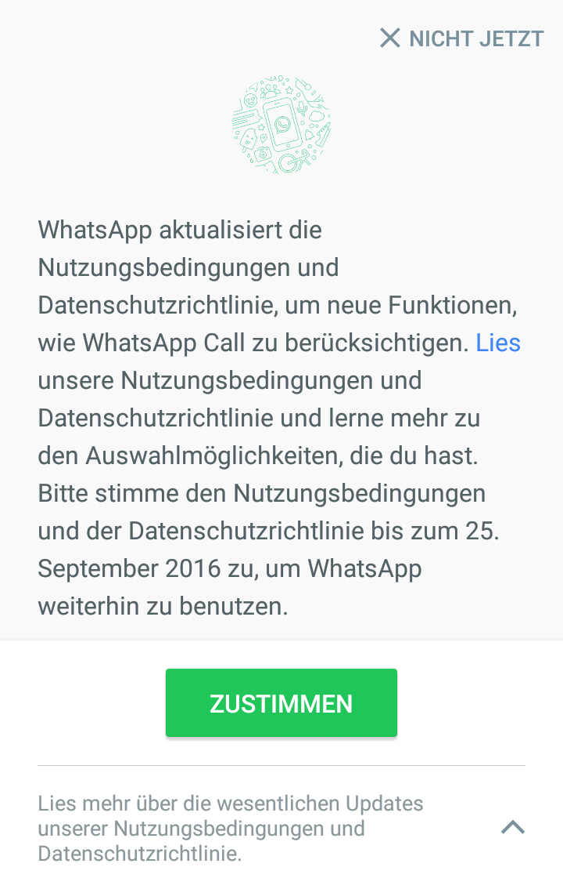

Warum Whatsapp verlassen und zu einem anderen Dienst wechseln?
21.09.2106, Herbst-Äquinoktium
Seit langem betrachte ich die Möglichkeit Whatsapp zu verlassen. In der Tat dauerte es damals bis ich mich entschied, die Anwendung zu installieren, aber schließlich gab ich wegen ihren Vorteilen auf: man kann ganz einfach und überall kommunizieren mit wem man möchte. Oder auch nicht. Auch die anderen müssen es installiert haben!
Am Ende ist Whatsapp nichts anderes als eine moderne Version des Chat der 90ern, aber halt fürs Handy. Nun aber, heutzutage viele Menschen haben diese App installiert und das ist bequem. Warum sie verlassen, wenn sie außerdem seit wenigen Monaten verschlüsselte Kommunikationen ermöglicht?
Weil, zudem dass ich das schon durchgedacht hatte, seit fast einen Monat, wenn ich die Anwendung öffne, sehe ich, dass ich ihre neue Nutzungsbedingungen akzeptieren muss:

Vorerst habe ich nicht akzeptiert. Stattdessen habe ich in diese Wochen hin und wieder "JETZT NICHT" gewählt, während ich parallel dazu begonnen habe zu untersuchen, was sie von mir wollen. Von uns allen. Zusammengefasst, das ist was ich gefunden habe:
Es ist eine Weile her, dass Facebook Whatsapp gekauft hat, und es war schon immer klar, dass sie eines Tages Wege finden würden, um den Vorteil zu nehmen. Zu beginnen versprechen sie uns, dass, wenn wir ihre neuen Bedingungen akzeptieren, Facebook uns Werbung von Unternehmen und Dienstleister anzeigen wird, mit denen wir über Whatsapp kontaktiert haben. In der Zukunft könnten sie sogar Werbung in Whatsapp einschalten. Und zudem wird Facebook auf seiner Plattform uns Freundschaft mit Menschen anbieten, welche auf die Kontaktliste unseres Handys sind.
Werbung kann ignoriert werden. Die kommerzielle Nutzung unserer Daten kann explizit ablehnen werden (wenn man es vor dem angegebenen Zeitpunkt vom 25. September gemacht hat, danach ist man ausgeliefert). Aber was man nicht tun kann, ist Whatsapp weiterhin zu behalten, ohne dass der Mutterkonzern Facebook alle deine Daten kennt. Selbst wenn man kein Konto bei Facebook hat, wie in meinem Fall.
Unter diesen wertvollen Daten befindet sich speziell, wie erwähnt, die Zusammenstellung von E-Mails und Telefonnummern aller Menschen, die man in seiner Kontaktliste hat. Sie (Facebook) haben dich. Und durch dich haben sie auch mich. Sie machen uns allen zu klatschhafte Verräter voneinander und setzen uns in eine runde Kette, die uns das Gefühl gibt, dass man nicht einmal durch Abbestellung herauskommen kann, für alle deine Freunde, die du in deiner Kontaktliste hast, werden dich verklatschen. Nicht einer oder ein paar, sondern alle zeigen dich mit ihrem Finger... und sie können es nicht vermeiden! Diese Art von Beziehung mit einem Unternehmen macht mich wirklich schlecht fühlen.
Darüber hinaus, was macht Facebook mit deinen Daten? Diese an die NSA weiterleiten (ja, sie auch). Und an den BND. Und wer weiß, an wie viele weitere Überwachungsdienste staatlicher Kontrolle dieses Systems, das die meisten ungern dulden, jedoch nicht viele wirklich unterstützen. Ich sicherlich nicht.
{kind=link}
Das Ergebnis dieser kleinen Forschung hat mich dazu gebracht, eine Entscheidung zu treffen: mit einem solchen Unternehmen will ich weder Umgang haben noch Geschäfte machen. "Whatsapp, ich habe dir eine Chance gegeben, aber du hast mich enttäuscht. Tschüss". Ich werde mein Whatsapp-Konto schließen und die Anwendung deinstallieren.
Aber ich werde mich nicht von der Welt isolieren! Es gibt viele Alternativen und zumindest eine von ihnen hat mich genug überzeugt um zu wechseln und sie zu verwenden. Wer mit mir in Verbindung treten möchte, kann die alte aber anhaltende E-Mail oder das SMS verwenden, oder auch weiter lesen um zu wissen, welche Option ich wähle und warum.